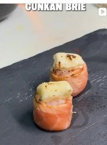
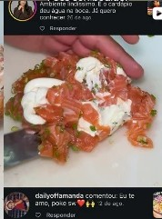
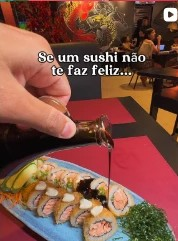
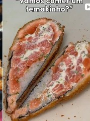
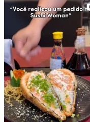
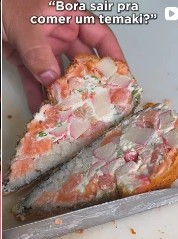
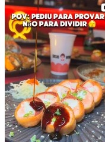

Sushi e sashimi
Hot skin, uramaki, salmão e muito mais no rodízio.

Rodízio de sushi · Belém
Eleito o melhor sushi 20/21 e 3º no Festival Estrela Azul 2026. Rodízio com muita variedade, poke, drinks e sobremesa para fechar.
Rodízio
Hot skin, uramaki, salmão e muito mais no rodízio.
Tigela com salmão, kani, cebola roxa e temperos da casa.
Drinks autorais e sobremesa para fechar a noite.
Galeria













Unidades
Rodízio de sushi e delivery pelo iFood.
Abrir no mapa →Rodízio de sushi e delivery.
Abrir no mapa →Contato
Peça pelo iFood ou chame no WhatsApp para reservar a mesa e tirar dúvidas.